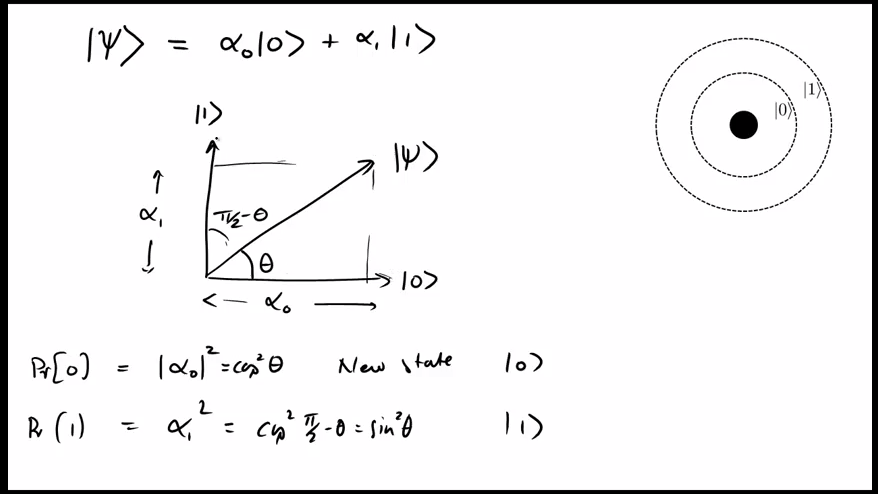
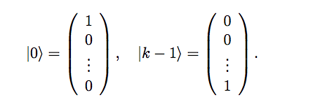

Scottish independence referendum is 2 years away.
Heard this idea from Phillip Blond here:
http://www.abc.net.au/radionational/programs/bigideas/big-society—philip-blond/4217882
Quote:
“So, in Britain, housing benefit, for example, you know certain families will be on it for 20 years. That income stream has probably paid for the original property three times over and there’s no benefit to the tenant and there is no benefit to the government.
What if we could capitalise or front-load these sorts of benefits such that they were transformative and people were able to bounce themselves out of the situation? … What if we could front-load that, give that to the mother and she could become educated? It would give her a far greater earning power and deliver far more to the family”
It is extremely frustrating to use Windows. Any basic tool that you would expect a modern OS to have is absent in Windows. In a corporate environment a PC is locked down so it is not possible to download useful utilities at will. To use Windows productively is always a daily struggle.
Today I want to find out a md5 checksum of a file in a Windows 7 PC. Of course, md5sum is nowhere in sight.
Luckily python is available on this PC. So, I rolled my own md5sum:
C:\> python -c "import hashlib; import sys; print hashlib.md5(open(sys.argv[1], 'r').read()).hexdigest()" TheFile.dat
Reading ‘Predictably Irrational’ by Dan Ariely
I have heard many of his talks so I already have some good idea what his book is about. But it still makes a very interesting read.
First couple of chapters are about price anchoring.
I suppose we can use it as a socio-psychological groundwork to explain why we have frequent financial crises.
Okay, each financial crisis involves different markets and instruments. Each of them has unique background, fundamentals and built-up. However, it always take a crisis-scale event for the underlying structural problem to be exposed and unwired itself. A crisis serves as a publicised event to readjust everyone’s anchoring of the value and returns of the financial assets that are under distress.
The regular polyhedra are the four-sided tetrahedron, the six-sided cube, the eight-sided octahedron, the twelve-sided dodecahedron, and the twenty-sided icosahedron. Although all five types had been identified by Pythagoras two hundred years before Plato was born, they are nonetheless collectively known asplatonic solids, named in honor of Plato by the geometer Euclid.
“The fact that we are experiencing a drought in 2012 comparable to the great Dust Bowl drought of the 1930s—without poor farming practices being partially to blame—bodes ill for the future of drought in the U.S. With human-caused global warming expected to greatly increase the intensity and frequency of great droughts like the 2012 drought in coming decades, we can expect drought to cause an increasing amount of damage and economic hardship for the U.S. “
A way to generate random password in erlang
$ erl Erlang R14B04 (erts-5.8.5) [source] [64-bit] [smp:4:4] [rq:4] [async-threads:0] [hipe] [kernel-poll:false] Eshell V5.8.5 (abort with ^G) 1> base64:encode_to_string(crypto:rand_bytes(16)). "9d1L2K5ZYEyFEXCs+dVqfA=="
To enable the swipe to delete feature, one must implement this API:
- (void)tableView:(UITableView *)tableView commitEditingStyle:(UITableViewCellEditingStyle)editingStyle
forRowAtIndexPath:(NSIndexPath *)indexPath
I can enable this feature, but I got this exception from this function
2012-08-11 22:30:46.286 app[76532:fb03] *** Terminating app due to uncaught exception 'NSInternalInconsistencyException', reason: 'Invalid update: invalid number of rows in section 0. The number of rows contained in an existing section after the update (10) must be equal to the number of rows contained in that section before the update (10), plus or minus the number of rows inserted or deleted from that section (0 inserted, 1 deleted) and plus or minus the number of rows moved into or out of that section (0 moved in, 0 moved out).'
It turns out even though I removed the object from the CoreDate managed context, I did not ask the NSFetchedResultsController to refetch the data set. The UITableView is still bound to the old data set and hence the internal inconsistency.
Leonardo da Vinci, who was forty years old when Columbus discovered America, died in 1519 at sixty-seven. Just two years earlier, in 1517, Martin Luther had posted his Ninety-five Theses on a church door in Wittenberg, launching the Protestant Reformation the same year Ferdinand Magellan had set sail from Spain, aspiring to circumnavigate the earth.
Quoted from Math and the Mona Lisa: The Art and Science of Leonardo da Vinci by Bulent Atalay
Latest update of Google Chrome makes the cpu fan of my mac book pro spin like crazy. Switch back to firefox for now
Output from brew install python3. Need to check why symlink step failed
$ brew install python3 ==> Installing python3 dependency: sqlite ==> Downloading http://sqlite.org/sqlite-autoconf-3071300.tar.gz ######################################################################## 100.0% ==> ./configure --prefix=/usr/local/Cellar/sqlite/3.7.13 --enable-dynamic-extensions ==> make install /usr/local/Cellar/sqlite/3.7.13: 9 files, 1.8M, built in 54 seconds ==> Installing python3 ==> Downloading http://python.org/ftp/python/3.2.3/Python-3.2.3.tar.bz2 ######################################################################## 100.0% ==> ./configure --prefix=/usr/local/Cellar/python3/3.2.3 --enable-shared ==> make ==> make install ==> Downloading http://pypi.python.org/packages/source/d/distribute/distribute-0.6.27.tar.gz ######################################################################## 100.0% ==> /usr/local/Cellar/python3/3.2.3/bin/python3.2 setup.py install ==> Caveats A "distutils.cfg" has been written, specifing the install-scripts folder as: /usr/local/share/python3 If you install Python packages via "python3 setup.py install", easy_install3, pip-3.2, any provided scripts will go into the install-scripts folder above, so you may want to add it to your PATH. Distribute has been installed, so easy_install is available. To update distribute itself outside of Homebrew: /usr/local/share/python3/easy_install3 pip /usr/local/share/python3/pip-3.2 install --upgrade distribute See: https://github.com/mxcl/homebrew/wiki/Homebrew-and-Python Error: The linking step did not complete successfully The formula built, but is not symlinked into /usr/local You can try again using `brew link python3' ==> Summary /usr/local/Cellar/python3/3.2.3: 4216 files, 79M, built in 3.3 minutes mbp002:bin antkong$
The importance of the idea of map: you stop thinking about control structure. And you start to think about operation on the aggregate, the list.
A way to dismiss a modal view controller is to link the button to an IBAction like this:
- (IBAction)cancelAddItem:(UIBarButtonItem *)sender {
[self.navigationController popViewControllerAnimated:YES];
}
But it does not work in storyboard anymore.
This is the solution:
- (IBAction)cancelAddItem:(UIBarButtonItem *)sender {
[self dismissModalViewControllerAnimated:YES];
}
Q: Bob began setting aside $5,000 per year in an equity fund at the age of 25. He has turned 30, and has just made another deposit into the fund. The fund has returned 4% annually. How much does Bob have in his account today?
A:
# contribution at age
>>> [(i, 5000)for i in range(25, 30+1)]
[(25, 5000), (26, 5000), (27, 5000), (28, 5000), (29, 5000), (30, 5000)]
>>> sum([5000*pow(1.05, i-25) for i in range(25, 30+1)])
34009.5640625
Calculate regular payment based on rate, number of payment and PV
def pmt(i, n, p):
return i * p * pow((1 + i), n) / (1 - pow((1 + i), n))
Example:
>>> pmt(0.06, 120, 120000)
-7206.622591189367
UIViewController::setMoviePlayerController: is an undocumented API, yet it is used in one of the Apple sample project.
Got this error message in xcode
*** Terminating app due to uncaught exception 'NSInternalInconsistencyException', reason: '-
[UITableViewController loadView] loaded the "nJq-Ph-OeI-view-HRK-KR-R8g" nib but didn't get
a UITableView.'
*** First throw call stack:
It is because I have removed a UITableView from a UITableViewController in a storyboard. Adding back a UITableView and relinking it to the view outlet of the controller fixes the problem
In ocaml, “let rec” defines a recursive function, for example:
# let rec ipow n m = if m = 0 then 1 else n * ipow n (m -1);; val ipow : int -> int -> int = <fun> # ipow 7 8;; - : int = 5764801
Encountered this error when adding core data support to my ios project
Receiver 'NSManagedObjectContext' for class message is a forward declaration.
Basically, in addition to adding the CoreData framework, we need to include the core data header file. The best place to add it is in the <AppName>-Prefix.pch
Easy
>>> a = 0+1j >>> b = -(0+1j) >>> b (-0-1j) >>> pow(a/2.0, 2) + pow(b/2.0, 2) (-0.5+0j)
Trying to retrofit coredata into an iOS Tabbed application. Kind of painful.
Finally get it done by these steps:
create an iOS Master-Detail Application with ‘Use Core Data’ option checked
Lift the boiler-plate code from the dummy project to my AppDelegate
In other ViewControllers, use [[UIApplication sharedApplication] delegate] to retrieve the delegate singleton and obtain the reference to the ManagedObjectContext from it.
Then I have spent a bit of time to solve the problem I have encountered before: Cannot use ‘push’ segue between a UITableview cell and another controller
Now I am woking on using static style table cells in a non-UITableViewController (Error: Static table views are only valid when embedded in UITableViewController instances). Gonna be bit tough to solve

Geometrical interpretation of Qubit
From the ‘Quantum Mechanics’ by Professor Umesh Vazirani, UCLA via Coursera.org
Three things you must ask yourself before you say anything:
Does This Need to Be Said
Does This Need to Be Said by Me
Does This Need to Be Said by Me NOW
Sometimes it is quite fun to answer some questions in Stackoverflow: you can help someone seeking answer and you may also learn a new thing or two yourself in the process.
This is one such example: http://stackoverflow.com/questions/11707151/python-make-a-global-condition-break.
Essentially the OP is asking if there is an easy to find the number of occurrence of a substring in a longer string. For example “assesses” has the substring “sses” 2 times.
It is a very simple question, but there is still something new I learn: while re.findall is the most elegant solution, it may not work in finding overlapped occurrence of pattern. To do so one needs to include a ‘lookahead’ in the regular expression.
My proposed solution is simply an improved version of OP’s code.
first = "an"
second = "trans-Panamanian banana"
def count_needle(first, second):
location = str.find(second,first)
if location == -1:
return 0 # none whatsoever
else:
count = 1
while location < len(second):
location = str.find(second,first,location +1)
if location < 0:
break
count = count + 1
return count
print(count_needle(first, second))
Here is a even shorter version which takes advantage of python’s flexible comparison syntax:
first = "an"
second = "trans-Panamanian banana"
def count_needle(first, second):
count = 0
location = str.find(second,first)
while (0 <= location < len(second)):
count += 1
location = str.find(second,first,location +1)
return count
print(count_needle(first, second))

Dirac’s ket notation. Details here.
The normalization on the complex amplitudes means that the state of the system is a unit vector in a k dimensional complex vector space — called a Hilbert space.